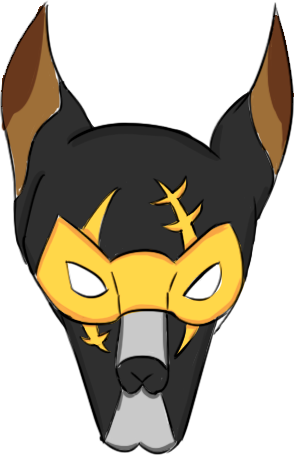
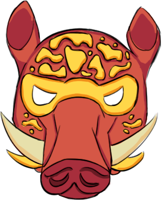

TRAGEDIA EN DIRECTO
EL REY SIMBA HA SIDO ASESINADO
Su majestad ha sido asesinado.
 Lobo ▼
Trabajo: Empresario.
Historia: Nacido en la absoluta pobreza, Lobo escaló desde lo más bajo recolectando chatarra e invirtiendo con astucia en rutas comerciales olvidadas. Su implacable ascenso a las altas esferas lo convirtió uno de los empresarios más influyentes de la nación, controlando las principales minas del reino. Especializado en el comercio de gemas únicas, ahora es el proveedor exclusivo de joyas del rey, transformando su antigua miseria en el brillo que ahora adorna la corona real.
Relaciones
▼ Jabalí 
Trabajo: Cocinero.
Historia: Entrenado por su tío Chicote, el Jabalí alcanzó la excelencia en la gastronomía local con un estilo propio y único. Debido a su habilidad culinaria, el rey le otorgó el título de 'Maestro de la Cocina Real'. Ahora, gobierna los fogones de palacio y es el encargado de poner orden y sabor en la mesa del reino.
Relaciones
Coneja ▼
Trabajo: Mayordoma.
Historia: Coneja ha pasado años sirviendo al Rey Simba, encargada de custodiar el pesado manojo de llaves del palacio. Bajo su cofia de mayordoma se esconde una mujer asustadiza y de corazón blando, incapaz siquiera de espantar a una mosca. Aunque sus oídos han captado secretos tras las cortinas que harían temblar el trono, ella prefiere cerrar los ojos y rezar por no haber escuchado nada. Enamorada hasta la médula del Koala, ve en él la única luz en su monótona vida de sirvienta; por él, y solo por él, sería capaz de encontrar un valor que no sabía que tenía.
Relaciones
▼ Cuerva
Trabajo: Millonaria.
Historia: Cuerva es la reina indiscutible del escándalo en Aurea, una cuerva que cambió las migajas por diamantes gracias a su cuenta de OnlyBirds, donde millones de aves pagan por ver su lujoso estilo de vida y sus "vuelos privados". Su actitud chulesca y prepotente nace de saber que su fortuna es mayor que la de muchos nobles de sangre antigua. Vive rodeada de sedas negras, joyas brillantes y sirvientes a los que apenas mira a la cara.
Relaciones
Koala ▼
Trabajo: Mayordomo.
Historia: El Koala ha sido durante años el consejero de confianza del Rey Simba; su temperamento pausado y su naturaleza imperturbable lo convertían en la única figura capaz de moderar el carácter del monarca. Mantiene una relación estrecha con la mayordoma Coneja, por quien haría lo que fuera para hacerla feliz. Es un experto conocedor de la vida y las rutinas del rey, así como de los rincones más profundos del palacio, especialmente de las bodegas, donde supervisaba personalmente las provisiones de la corona.
Relaciones
▼ Pingüino
Trabajo: Periodista.
Historia: Pingüino no era solo un periodista; era la voz oficial del reinado de Simba y su confidente más cercano fuera del servicio. Con su cámara siempre colgada al cuello y su libreta de apuntes, transformaba las decisiones reales en relatos heroicos para los ciudadanos de Aurea. Su amistad con el Rey le otorgaba un pase VIP a los secretos más oscuros de la corte, los cuales guardaba bajo llave a cambio de exclusivas mundiales.
Relaciones
El Dominio de Aurea
Fundado bajo el primer rugido de la dinastía de Simba, Aurea es el corazón dorado del mundo animal. Un reino vasto que se extiende desde las cumbres de Roca Magna hasta las infinitas Llanuras del Brindis. Durante décadas, la paz se mantuvo gracias a la "Ley de la Melena", un pacto de respeto mutuo entre depredadores y presas que convirtió a esta nación en el baluarte de la civilización.
El Rey Simba
Hijo del legendario Mufasa, Simba ascendió al trono tras una juventud marcada por la lucha y la redención. Su reinado se caracterizó por un equilibrio delicado entre tradición y modernidad, donde las antiguas costumbres se fusionaban con las nuevas ideas traídas por los animales jóvenes. Amado por muchos pero temido por otros, Simba gobernó con una mezcla de sabiduría y ferocidad, siempre buscando el bienestar de su pueblo.
Pistas


Un cuchillo de cocina con restos de sangre.

Una botella de lejía con una huella.

Pañuelo de Cuerva manchado de sangre.

Un contrato arrugado de Pingüino firmado por sí mismo.